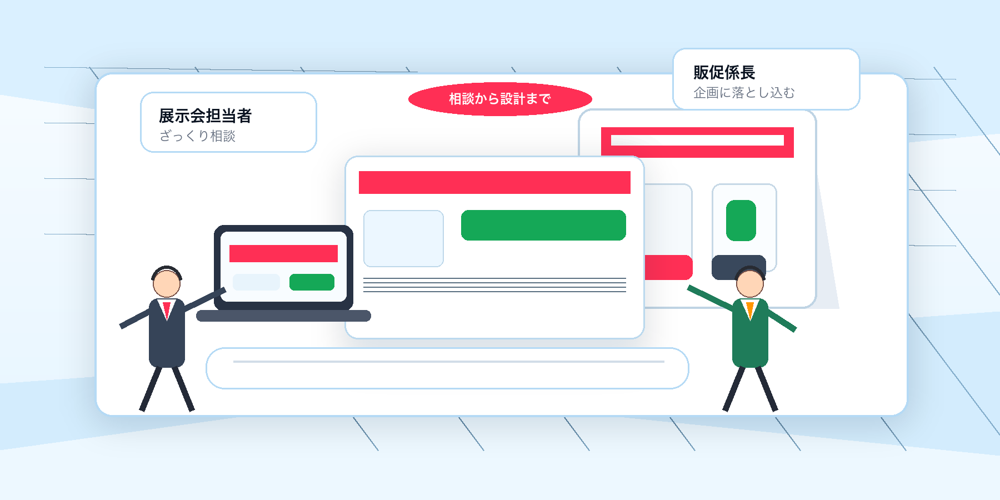
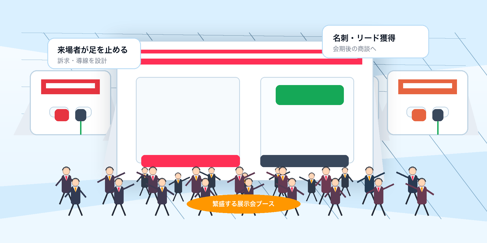
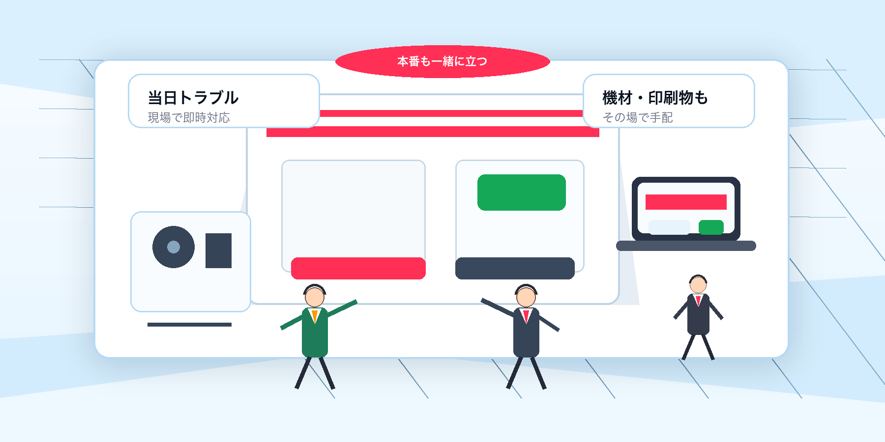
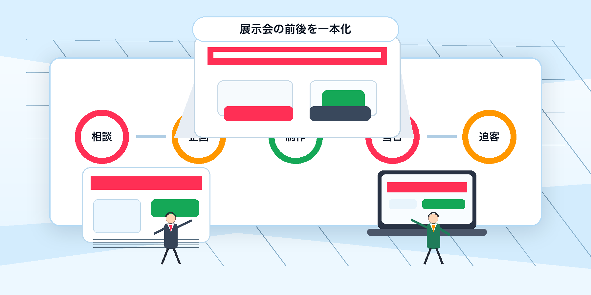

Main visual options
展示会担当者と販促係長の関係性、会場のにぎわい、当日対応、会期後までの伴走をそれぞれ強調した4案です。

「まだ決まっていない相談」から設計に落とし込む安心感を出す案。BtoB担当者の不安解消に一番寄せた方向です。

来場者が足を止め、名刺・リード獲得につながっている成果感を強調。ファーストビューの勢いを出しやすい案です。

機材・印刷物・設営トラブルにその場で動く現場力を訴求。ワイヤーフレーム内の当日対応パートと相性が良い案です。

相談・企画・制作・当日・追客までの流れを俯瞰して見せる案。サービス全体像を一瞬で伝えたい場合に向いています。